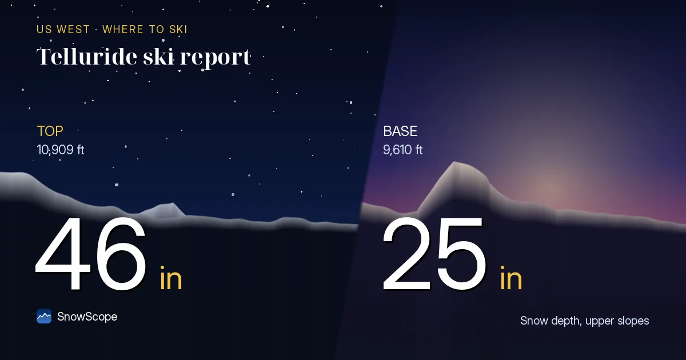
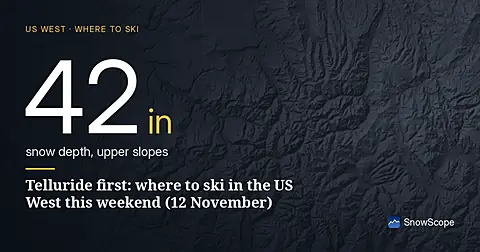
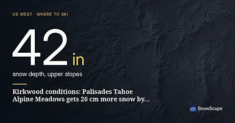

Telluride ski report: 51 in on the upper slopes (US West, 23 November)
Telluride ski report – Today the deepest snow in the US West is at Brian Head Resort (United States), about 57 in (144 cm) on the upper slopes. Telluride is next with 51 in (130 cm), and Mount Rose Ski Tahoe has 46 in (117 cm). SnowScope sees 404,500 sq mi (1,047,650 km²) of snowy ground in the US West today, and snow at 186 of 193 resorts. In the field we always carry a probe; numbers like these tell you where to go, the probe tells you what is under your skis.
See the live snow forecast for Telluride in the SnowScope appSnow depth, powder alerts and the 3D map, free.
What is on the ground
Less ground is white now: 441,137 sq mi (1,142,540 km²) on 21 November, only 404,500 sq mi (1,047,650 km²) today, and 329,754 sq mi (854,060 km²) expected on 26 November.
At Brian Head Resort, the difference between top and bottom is clear: 46 in (117 cm) at the top (10,909 ft / 3,325 m), 37 in (95 cm) at mid-mountain (10,259 ft / 3,127 m) and 25 in (64 cm) at the base (9,610 ft / 2,929 m).
| Resort | Snow depth | New snow, 72 h | Coming, next days | Top |
|---|---|---|---|---|
| Brian Head Resort | 57 in (144 cm) | 0 in (1 cm) | 0 in (0 cm) | 10,909 ft (3,325 m) |
| Telluride | 51 in (130 cm) | 7 in (19 cm) | 1 in (2 cm) | 12,507 ft (3,812 m) |
| Mount Rose Ski Tahoe | 46 in (117 cm) | 1 in (2 cm) | 0 in (0 cm) | 9,567 ft (2,916 m) |
| Palisades Tahoe Alpine Meadows | 43 in (108 cm) | 1 in (3 cm) | 0 in (1 cm) | 8,494 ft (2,589 m) |
| Cimarron Mountain Club | 42 in (106 cm) | 7 in (17 cm) | 0 in (1 cm) | 11,355 ft (3,461 m) |

Against past winters
At about 10,259 ft (3,127 m), Brian Head Resort has 41 in (103 cm) today; a normal 23 November has 6 in (16 cm) there.
That is more than in 44 of the 46 past winters on this date.
In past winters the best snow at Brian Head Resort usually came early March / mid-March.
An early lead like this matters most for the lower and middle runs, which usually wait until December for this much snow.
Height by height at Brian Head Resort: 9,610 ft (2,929 m) 25 in (64 cm) on the ground, 1 in (2 cm) more in the next 7 days; 10,259 ft (3,127 m) 37 in (95 cm) on the ground, 1 in (2 cm) more in the next 7 days; 10,909 ft (3,325 m) 46 in (117 cm) on the ground, 1 in (2 cm) more in the next 7 days.
What to expect next
Looking ahead to 26 November, the forecast brings 1 in (2 cm) at Telluride, 0 in (1 cm) at Palisades Tahoe Alpine Meadows and 0 in (1 cm) at Cimarron Mountain Club.
Warm air at Brian Head Resort on 25 November: the freezing level goes from 6,693 ft (2,040 m) to 11,188 ft (3,410 m), above the resort's top (10,909 ft / 3,325 m), so rain or wet snow can reach every slope.
Forecasts a few days ahead can change: look at the map again the day before you travel.
From the ground stations
On 21 November, the Mt Rose Ski Area station (8,809 ft / 2,685 m) measured 46 in (117 cm) on the ground. At the Leavitt Lake station (9,600 ft / 2,926 m), the measured snow on the ground was 45 in (114 cm) on 21 November. On 21 November, the Lost Lakes station (8,638 ft / 2,633 m) measured 43 in (109 cm) on the ground.
A word on the numbers: resort values are our model's estimate for the upper slopes, while each station measures a single spot on the date given.
Against other winters
Brian Head Resort is off to a good start. At 10,259 ft (3,127 m) SnowScope shows 41 in (103 cm) today, more than on this date in 44 of the past 46 winters; the usual is 6 in (16 cm).
Nothing unusual at Telluride: 22 in (57 cm) at 10,620 ft (3,237 m) today, more than in 28 of the past 46 winters, with 13 in (33 cm) as the usual.
Good news from Mount Rose Ski Tahoe: 39 in (98 cm) at 8,573 ft (2,613 m) today, deeper than in 44 of the past 46 winters on this date (usual: 5 in (12 cm)).
Tips for skiers
- Snow on the map does not mean a resort is open: check lifts and opening dates on the resort's website.
- Early-season snow is thin. Stay on open, groomed pistes: rocks and grass can hide just under the surface.
- South-facing slopes take the most sun and melt first; high, north-facing slopes keep their snow the longest.
- Before you ski off-piste or go touring, read the official avalanche bulletin (links below).
- Get a powder alert in the SnowScope app to know when Brian Head Resort gets fresh snow.
About these numbers
Resort snow depths are the deepest snow on the resort's upper slopes on the date shown; they are estimates for an area, not a measurement at one point. Forecasts can change. Always read the official avalanche bulletin before going off-piste.
Official avalanche bulletins: Colorado Avalanche Information Center · avalanche.org (US national portal)
Cite this report
For research, teaching or the press: the numbers and charts are free to reuse under CC BY 4.0 with this citation.
SnowScope (2026), Telluride ski report: 51 in on the upper slopes (US West, 23 November), https://snowscope.app/blog/en/2026/11/us-west-telluride-snow-depth-today-23-november-2026.html, accessed 2026-11-23
SnowScope (Atlas Labs). (2026, November 23). Telluride ski report: 51 in on the upper slopes (US West, 23 November). SnowScope snow reports. https://snowscope.app/blog/en/2026/11/us-west-telluride-snow-depth-today-23-november-2026.html
BibTeX
@misc{snowscope2026uswesttelluridesnowdepth,
author = {{SnowScope (Atlas Labs)}},
title = {Telluride ski report: 51 in on the upper slopes (US West, 23 November)},
year = {2026},
month = nov,
howpublished = {\url{https://snowscope.app/blog/en/2026/11/us-west-telluride-snow-depth-today-23-november-2026.html}},
note = {Published 2026-11-23 14:07 UTC; accessed 2026-11-23}
}· CC BY 4.0 · Methods, data and tools →
Telluride: snow and temperature by height, this winter vs last (tools) →
Follow Telluride
Free: a message when fresh snow is coming, and the forecast every morning.
More snow reports

Telluride's mid-slopes show 9 in (24 cm), running 92 percent of the seasonal average for mid-November. Saturday's system adds 5 in (13 cm) mostly above 10,000 ft.

Where should you go skiing in the US West? Three inputs, one shortlist: today's snow depth, the new snow of the last 72 hours and the forecast point …

Fresh snow keeps falling at Tahoe resorts this weekend. Upper slopes at Palisades Tahoe Alpine Meadows hold 107 cm (42 in) today, 19 November.